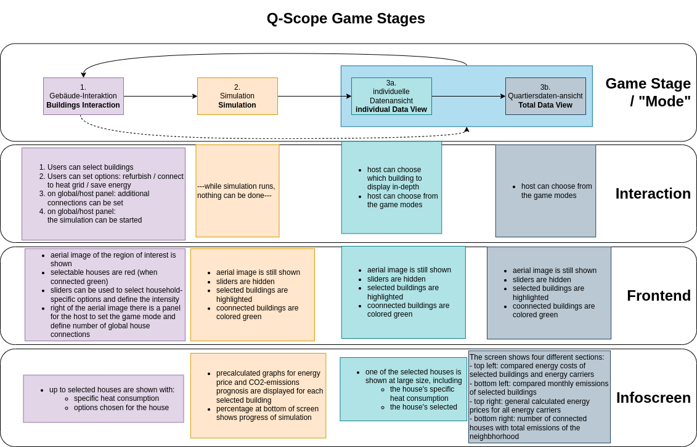

Frontend
The Q-Scope frontend, as used in the project QUARRE100, was programmed using pygame - a set of Python modules designed for writing video games. In this chapter, we will first handle the frontend’s installation and afterwards explain its features by going through the code (more or less linearly).
Installation
After cloning the frontend’s repository, you can simply install all required python modules by executing pip install -r requirements.txt. (If the requirements.txt file is incomplete, and you run into problems, just install whichever module is missing via pip3 install [MODULE].)
Simply run the script via python3 run_q100viz.py
File Structure
qScope_frontend
└───q100viz
└───graphics
| contains tools for graph creation and image handling
└───interaction
| "gameplay" modes and interaction with sliders
└───settings
└───run_q100viz.py
Running
The main script is called run_q100viz.py. You can start it from the qScope_frontend folder by running python3 run_q100viz.py. Some flags can be set to enable debug options:
--select_random [NUMBER_OF_HOUSES]: preselects n houses to opt in for a connection to the heat grid
--verbose: activates verbose mode to print more information to console
--simulate_until [NUMBER_OF_YEAR]: run the gama-simulation until the given year. last simulation step will be last day before entered year.
--connect: force buildings to opt in for “connection_to_heat_grid”
--refurbish: force buildings to opt in for “refurbish”
--save_energy: force buildings to opt in for “save_energy”
--start_at: force the frontend to start at a certain frontend_mode
--test:
--main_window: forces the projection canvas to pop up at the current monitor.
--research_model: There are two simulation files provided. If specified, the research model will be used for simulation (rather than the workshop model)
These flags are specified in the first section of the main script. At the end of the main script, an instance of the frontend is created and run in the loop. The frontend class itself is defined in q100viz/frontend.py.
Initialization
The whole frontend was programmed using pygame - a set of Python modules designed for writing video games. Pygame will create a graphical canvas, running in the loop, which will change its appearance according to user action.
Config file
To configure the frontend, the file q100viz/settings/config.py can be changed before running the application.
Note
Make yourself a copy of this file and adjust it according to the context you want to use the setup. We had different scenarios for different workshop participants.
Here you can modify the path of files being imported/exported, change the source file and the simulation time for the agent-based-model, save information of the extents of the grids and the sliders here. The individual adjustments will be discussed in the according sections, respectively.
Session file
The file q100viz/session.py is a container for global variables. The file does some initial variable assignment, so that we won’t stumble across any NoneType errors later on. Some config variables will be stored here with more accessible variable names (rather than having to use python dictionaries all the time). You’ll basically find anything that needs to be referred to from different parts throughout the code here, such as variables used for Debugging.
In the following graphics section, the pygame viewport is loaded and keystone transformation is perfomed.
Furthermore, a buildings variable is created as an instance of the Buildings class, which represents the houses the users can interact with. It is a DataFrame that is very commonly referred to in the project, as it stores polygon data and metadata of the GIS objects.
Further contents of the code are: - The environment variable that stores information about the machine state, like the current game mode and iteration, global scenarios regarding the energy prices, current state of houses connected to the heat grid. It is used mostly to transfer data to the infoscreen.
A scenario for possible energy prices and further settings affecting the dynamics of the agent-based-model are set here as well. The source csv files for this lie in the data_ folder.
Initialization of GIS objects, such as the geographic canvas extents and the basemap file are initialized
Initialization of the grid objects. These are the cells representing the physical tiles on the table. They mirror the physical interaction and can be addressed by a grid object that is sent from the cspy_ tag decoder at each interaction.
Initialization of the _modes. The different game stages are stored in a variable called
modes.
GIS & Buildings Data
Buildings
How are the buildings you see on the map colored and how can they be accessed? Most of the interaction in the QUARREE100 project is done via selection of buildings on an aerial map. The source data for these building polygons comes from a Shapefile in the data folder
The Buildings class is basically one large DataFrame containing all metadata about the buildings taken from a shapefile. The source file contains information about the houses addresses, specific heat consumption, energy carrier, building type, etc.
Only existing buildings are regarded.
The buildings can be clustered in groups according to similar heat consumptions:
def make_clusters(self, start_interval):
'''make groups of the selected buildings. group by standard deviation of energy consumption'''
cluster_list = []
for idx in range(len(self.df.index)):
interval = start_interval # standard deviation
cluster = pandas.DataFrame()
while len(cluster) < 2: # make sure no building is alone
cluster = self.df.loc[(
(self.df['energy_source'] == self.df.loc[
self.df.index[idx], 'energy_source'])
&
(self.df['spec_heat_consumption'] >= self.df.loc[self.df.index[idx],
'spec_heat_consumption'] - self.df['spec_heat_consumption'].std() * interval)
&
(self.df['spec_heat_consumption'] <= self.df.loc[self.df.index[idx],
'spec_heat_consumption'] + self.df['spec_heat_consumption'].std() * interval)
&
(self.df['spec_power_consumption'] >= self.df.loc[self.df.index[idx],
'spec_power_consumption'] - self.df['spec_power_consumption'].std() * interval)
&
(self.df['spec_power_consumption'] <= self.df.loc[self.df.index[idx],
'spec_power_consumption'] + self.df['spec_power_consumption'].std() * interval)
)]
interval += 0.1 # increase range, try again if necessary
cluster_list.append(cluster)
devtools.print_verbose(
"building {0} is in a group of to {1} buildings with similar specs:".format(self.df.index[idx], len(cluster)), session.VERBOSE_MODE, session.log)
# devtools.print_verbose(cluster[['spec_heat_consumption', 'spec_power_consumption']].describe(), session.VERBOSE_MODE)
return cluster_list
Further information such as paths for pre-generated graphics are added. The DataFrame will later comprise images exported by the ABM_ to be forwarded to and shown at the infoscreen.
Note
“Behavior” data such as the connection to the QUARRE100-heat-grid, refurbishment of the house or energy-saving measures are pre-set in the following manner: false, if house’s energy_source (in source data) is not None, else the house will come in pre-connected and refurbished.
Buildings can either be selected by a user or not. Selection is done if a cell is selected on the table (by placing a token physically). cspy_ will detect any interaction with the table surface and forward the grid information to the frontend to be deciphered in the grid.py: read_scanner_data function.
The Buildings class contains additional functions, e.g. find_closest_heat_grid_line for graphical calculations and functions to organize, convert and export the DataFrame for specific needs.
GIS
The file gis.py contains two classes:
The GIS class draws features from the source Shapefile, like polygons and lines, onto the canvas. It provides functions to draw the whole polygon layer at once, color them in a certain style (e.g. according to heat grid connection status), etc.
The Basemap class initiates and warps the basemap image.
Positioning of the GIS layers is done during initialization of the GIS class object, where the corner points of the ROI (region of interest) extent are set:
_gis = gis.GIS(
config['CANVAS_SIZE'],
# northeast northwest southwest southeast
[[1013631, 7207409], [1012961, 7207198], [1013359, 7205932], [1014029, 7206143]],
viewport)
basemap = gis.Basemap(
config['CANVAS_SIZE'], config['BASEMAP_FILE'],
# northwest southwest southeast northeast
[[1012695, 7207571], [1012695, 7205976], [1014205, 7205976], [1014205, 7207571]],
_gis)
Note
Some other ROIs we tested in QUARREE100 were:
kleinerer Kartenausschnitt:
_gis = session.gis = gis.GIS(canvas_size, [[1013578, 7207412], [1013010, 7207210], [1013386, 7206155], [1013953, 7206357]], viewport)
mit Input Area am linken Rand und Aussparung unten:
_gis = session.gis = gis.GIS(canvas_size, [[1013554, 7207623], [1012884, 7207413], [1013281, 7206147], [1013952, 7206357]], viewport)
mit Input Area am rechten Rand und Aussparung unten:
gis = session.gis = gis.GIS(canvas_size, [[1013631, 7207409], [1012961, 7207198], [1013359, 7205932], [1014029, 7206143]], viewport)
Canvas setup
Upon initialization of the frontend class, the pygame environment is created. Things like the display framerate, window position etc can be set here.
You can set the window’s position using the os module:
# set window position
if not run_in_main_window:
x = 0 # left
y = 2560 # height of upper monitor --> display on lower monitor
os.environ['SDL_VIDEO_WINDOW_POS'] = "%d,%d" % (
0, 2560) # projection to the left
For this setting, the monitors should be organized as follows:
![[Image of two schematic monitors, above each other and aligned left]](_images/frontend_screen-position.png)
The canvas is masked by a layer that defines the margins of the region of interest (ROI). The following list of points defines the extent of a masking polygon:
self.mask_points = [[0, 0], [85.5, 0], [85.5, 82], [0, 82], [0, -50],
[-50, -50], [-50, 200], [200, 200], [200, -50], [0, -50]]
Finally, a seperate thread for UDP observation is started. Each table (“grid”) has a seperate communication thread. More about how communication between tag decoder, frontend and infoscreen works in the Communication section.
Frontend Game Loop
TODO:
Projection
TODO: how to handle the viewport for debugging (keys), session.show_polygons, session.show_basemap, …
simple Pygame features
Drawing on Canvas
displaying text:
# 1. define font:
font = pygame.font.SysFont('Arial', 20)
# 2. use font to write to canvas:
canvas.blit(font.render(str(mouse_pos), True, (255,255,255)), (200,700))
drawing polygons onto a specific surface:
# general:
# points = [[x1, y1], [x1, y2], [x2, y1], [x2, y2]]
# [[bottom-left], [top-left], [bottom-right], [top-right]]
# points_transformed = reference_surface.transform(points)
# pygame.draw.polygon(reference_surface, color, points_transformed)
# example:
points = [[20, 70], [20, 20], [80, 20], [80, 70]] # percentage relative to surface
points_transformend = session.grid_1.surface.transform(points)
# surface, color, coords_transformed
pygame.draw.polygon(viewport, (255, 0, 0), viewport.transform(rect_points))
display image Pygame is able to load images onto Surface objects from PNG, JPG, GIF, and BMP image files.
image = pygame.image.load("images/scenario_progressive.bmp")
canvas.blit(image, (0,0))
display sliders:
The sliders have a bool called show_text that, when True, activates the display of the slider control texts. This variable can be used for the usage modes to define whether the slider controls shall be displayed.
Drawing Heat Grid Lines
// TODO: #. Buildings.find_closest_heat_grid_line #. draw the line
Calibration
keystone transformation
general information on image transofrmation using opencv:
tutorial_py_geometric_transformations
using cv.perspectiveTransform for vectors and cv.warpPerspective for images
adding a new surface, draw on it and transform it:
class SomeClass:
# session.canvas_size = 1920, 1080
self.surface = keystone.Surface(session.canvas_size, pygame.SRCALPHA)
# x_size, y_size = 22, 22
self.surface.src_points = [[0, 0], [0, y_size], [x_size, y_size], [x_size, 0]]
self.surface.dst_points = [
[config['X1'], config['Y1']],
[config['X1'], config['Y2']],
[config['X2'], config['Y2']],
[config['X2'], config['Y1']]]
# where e.g. X1 = 0, X2 = 50, Y1 = 0, Y2 = 81.818
def draw(self, viewport):
pygame.draw.polygon(self.surface, pygame.Color(255, 255, 255), [[20, 70], [20, 20], [80, 20], [80, 70]]) # render polygon
viewport.blit(self.surface, (0,0)) # cast it to viewport
in file q100viz/keystone.py
recognition/data
from cspy via UDP (json)
definition via
cityscopy.json
frontend representation
slider uses the transformation of the grid
drawing of polygons and values should be done via
self.surface.blit(...). Slider surface is rendered and “blitted” to main canvas.
print(slider.coords_transformed) returns:
[[860.9641723632812, 915.1583862304688],
[863.9833984375, 614.8511352539062],
[1228.917724609375, 622.6510009765625],
[1226.5196533203125, 923.7374267578125]]
with [[bottom-left[x], bottom-left[y]], [upper-left[x], upper-left[y]], [upper-right[x], upper-right[y]], [bottom-right[x], bottom-right[y]]]
Game Modes
In the QUARREE100 use case there are different machine states, defined by the files in
q100viz/interaction/→ these are the modes the program is running at (per time)- implemented modes are:
each mode has a function called activate() which is used to (re-)active the mode and set the specific display settings accordingly. Do I want to see a slider (or two)? Shall the basemap be visible? Define it here.
The __init__ function is seldomly used, since it will be run in the beginning of the script (in session.py), before the variables (e.g. grid) are initialized.
Buildings Interaction
In the Input Mode, users can set household-, buildings- global parameters. They can leave the mode placing a token on the “simulation mode” selector.
Simulation
The Simulation can be started using S key. It will generate an experiment API file for GAMA according to this scheme: https://gama-platform.org/wiki/Headless#simulation-output and run the provided model file using the gama-headless.sh . These two files are to be set up in config.py.
Setting up the simulation
TODO:
… will start the GAMA headless simulation and wait for the results.
Q-Scope needs to know where to find GAMA’s gama-headless.sh file, which can be found in the extracted folder gama/headless. Set this up in config.py, providing the headless folder and the location of the gama model file:
'GAMA_HEADLESS_FOLDER' : '/home/qscope/GAMA/headless/',
'GAMA_MODEL_FILE' : '../q100_abm/q100/models/qscope_ABM.gaml',
ATTENTION: make sure to set the user rights of gama-headless.sh executable via chmod u+x gama-headless.sh
Data View
User Interface
Grid & Tiles
TODO: all about the tiles & tangibles. usage and setup.
grid setup
single grid, upper left:
grid_1 = session.grid_1 = grid.Grid(canvas_size, 11, 11, [[50, 50], [50, 0], [75, 0], [75, 50]], viewport)
grid_2 = session.grid_2 = grid.Grid(canvas_size, 22, 22, [[0, 0], [0, 100], [50, 100], [50, 0]], viewport)
16 x 22 grid rechts:
grid_1 = session.grid_1 = grid.Grid(canvas_size, 16, 22, [[50, 0], [50, 72], [100, 72], [100, 0]], viewport)
grid_2 = session.grid_2 = grid.Grid(canvas_size, 22, 22, [[0, 0], [0, 100], [50, 100], [50, 0]], viewport)
18 x 22 grid rechts:
ncols = 22
nrows = 18
grid_1 = session.grid_1 = grid.Grid(canvas_size, ncols, nrows, [[50, 0], [50, 81], [100, 81], [100, 0]], viewport)
grid_2 = session.grid_2 = grid.Grid(canvas_size, 22, 22, [[0, 0], [0, 100], [50, 100], [50, 0]], viewport)
grid interaction examples
increase/decrease value by relative rotation:
e.g. emission, in InputMode.draw():
if cell.id < 4:
if cell.rel_rot == 1:
i = get_intersection(session.buildings, grid, x, y)
session.buildings.loc[i, 'CO2'] += 20
elif cell.rel_rot == -1:
i = get_intersection(session.buildings, grid, x, y)
session.buildings.loc[i, 'CO2'] -= 20
grid coordinates:
grid.rects_transformed
for i, (cell, coords) in enumerate(session.grid_1.rects_transformed):
print("{0}: ({1}|{2}): {3}".format(i, cell.x, cell.y, coords))
# returns:
'''
0: (0|0): [[134.9009246826172, 4.38118839263916], [134.4179229736328, 37.4811897277832], [167.75010681152344, 38.0572509765625], [168.22642517089844, 4.963389873504639]]
1: (1|0): [[168.22642517089844, 4.963389873504639], [167.75010681152344, 38.0572509765625], [201.06971740722656, 38.633094787597656], [201.53933715820312, 5.545371055603027]]
2: (2|0): [[201.53933715820312, 5.545371055603027], [201.06971740722656, 38.633094787597656], [234.37672424316406, 39.20872497558594], [234.8396759033203, 6.127132415771484]]
3: (3|0): [[234.8396759033203, 6.127132415771484], [234.37672424316406, 39.20872497558594], [267.6711730957031, 39.78413391113281], [268.12744140625, 6.708674430847168]]
4: (4|0): [[268.12744140625, 6.708674430847168], [267.6711730957031, 39.78413391113281], [300.9530334472656, 40.35932922363281], [301.4026184082031, 7.28999662399292]]
5: (5|0): [[301.4026184082031, 7.28999662399292], [300.9530334472656, 40.35932922363281], [334.2223205566406, 40.934303283691406], [334.6652526855469, 7.871099472045898]]
'''
def read_scanner_data(self, message):
try:
msg = json.loads(message)
except json.decoder.JSONDecodeError:
print("Invalid JSON")
return
try:
# update grid cells
for y, row in enumerate(self.grid):
for x, cell in enumerate(row):
cell.id, cell.rot = msg['grid'][y * self.x_size + x]
cell.selected = cell.id != 5 # any non-white object selects cells
# calculate relative rotation
# an inactive cell has a rotation value of -1
if cell.rot == -1:
cell.rel_rot = 0
elif cell.prev_rot != cell.rot:
cell.rel_rot = cell.rot - cell.prev_rot if cell.prev_rot > -1 else 0
cell.prev_rot = cell.rot
session.flag_export_canvas = True
session.active_mode.process_grid_change()
# update slider values
# TODO: this causes type error when no slider value provided in cspy → provide 0 by default?
for slider_id in self.sliders.keys():
if msg['sliders'][slider_id] is not None: self.sliders[slider_id].value = msg['sliders'][slider_id]
self.sliders[slider_id].process_value()
except TypeError as t:
# pass
print("type error", t)
except IndexError:
print("Warning: incoming grid data is incomplete")
Sliders
TODO: how to define and setup the sliders.
ModeSelector
A ModeSelector is a specific cell on the grid, which, when selected via token, activates a certain Mode.
grid_1_setup.csv, grid_2_setup.csv, input_scenarios_grid_1.csv and input_scenarios_grid_1.csv are used to assign functionality to grid cells.
valid handles are:
environment handles:
parameter |
possible values |
|---|---|
alpha_scenario |
Static_mean, Dynamic_moderate, Dynamic_high, Static_high |
carbon_price_scenario |
A - Conservative, B - Moderate, C1 - Progressive, C2 - Progressive, C3 - Progressive |
energy_price_scenario |
Prices_Project start, Prices_2021, Prices_2022 1st half |
q100_price_opex_scenario |
12 ct / kWh (static), 15-9 ct / kWh (dynamic) |
q100_price_capex_scenario |
1 payment, 2 payments, 5 payments |
q100_emissions_scenario |
Constant_50g / kWh, Declining_Steps, Declining_Linear, |
household-individual handles:
adjustable |
parameter |
possible values |
|---|---|---|
o |
my_heat_consumption |
float |
o |
my_power_consumption |
float |
o |
my_heat_expenses |
float |
o |
my_power_expenses |
float |
o |
my_heat_emissions |
float |
o |
my_power_emissions |
float |
o |
my_energy_emissions |
float |
✓ |
mod_status |
‘u’, ‘s’ |
✓ |
spec_heat_consumption |
float |
✓ |
spec_power_consumption |
float |
✓ |
energy_source |
gas, oil, None |
zusätzlich kann save_energy eingestellt werden als Einstellung von Agentenverhalten (TODO!)
questionnaire:
‘answer’ (deprecated?)
mode selection:
‘start_input_scenarios’ (starts input mode A for global parameters)
‘start_input_households’ (input mode B for individual household parameters)
‘start_simulation’ (creates xml to start GAMA simulation)
colors can be set using strings from this list: https://www.pygame.org/docs/ref/color_list.html
The Modes can be switched using either the input keys:
T: InputMode (TUI Mode)
C: CalibrationMode
S: Simulation
Debugging and Devtools
TODO: session.log TODO: session.VERBOSE_MODE TODO: debug_num_of_random_buildings, debug_connection_date,debug_force_refurbished, debug_force_save_energy
TODO: refer to _viewport_handling_